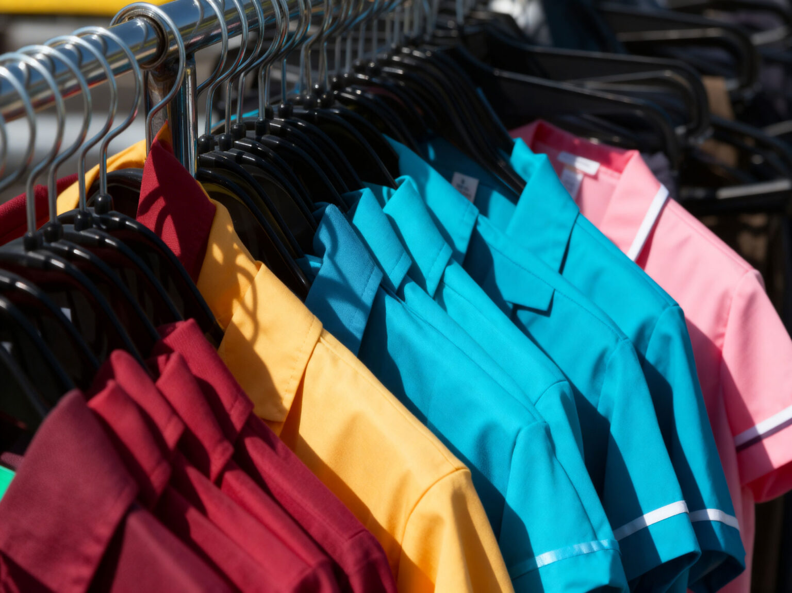

Para cada jornada
Uniformes para tu equipo
Prendas cómodas, funcionales y resistentes, diseñadas para acompañarte durante toda la jornada.
Ver uniformes
Encuentra el uniforme que encaja contigo
Diseñamos y fabricamos uniformes pensados para el trabajo real: cómodos, funcionales y resistentes para acompañarte durante toda la jornada.
Busca tu uniforme
Personas que empiezan temprano, que no paran, que están cuando hace falta.
Diseñamos uniformes para quienes trabajan de verdad, jornada tras jornada.
Uniformes Weark
Casacas sanitarias, pantalones, gorros y uniformes completos personalizados para tu equipo. Prendas pensadas para el uso diario, cómodas y adaptadas a tu identidad.
Para cada jornada
Prendas cómodas, funcionales y resistentes, diseñadas para acompañarte durante toda la jornada.
Ver uniformesCompleta tu uniforme
Gorros profesionales para completar tu vestuario de trabajo.
Ver gorrosPersonalización Weark
Crea uniformes únicos para tu equipo, con la calidad y comodidad que tu marca necesita.
Consúltanos por WhatsAppRopa profesional
Soluciones versátiles para los distintos trabajos y equipos.
Uniformes y casacas sanitarias diseñadas para largas jornadas. Comodidad, resistencia y fácil mantenimiento para clínicas y centros de salud.
Prendas resistentes y cómodas para moverse con facilidad durante toda la jornada. Diseñadas para aguantar el ritmo.
Para quienes están siempre al pie del servicio. Uniformes que combinan buena imagen y comodidad, del primer turno al último.
Para quienes inspiran cada día. Uniformes cómodos y duraderos que te acompañan en todas tus clases.
Soluciones versátiles para cada sector, con prendas resistentes que se adaptan a las exigencias de tu actividad.
Tejidos de microfibra de última generación que mantienen tu uniforme fresco y sin arrugas.
Para que tu ropa profesional luzca impecable jornada tras jornada.
Compromiso Weark
En Weark creemos que un buen uniforme marca la diferencia. Por eso trabajamos con materiales de calidad y diseños pensados para tu comodidad.
Tu imagen profesional es nuestra prioridad.